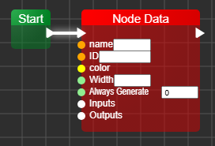
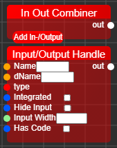
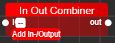
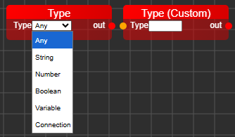
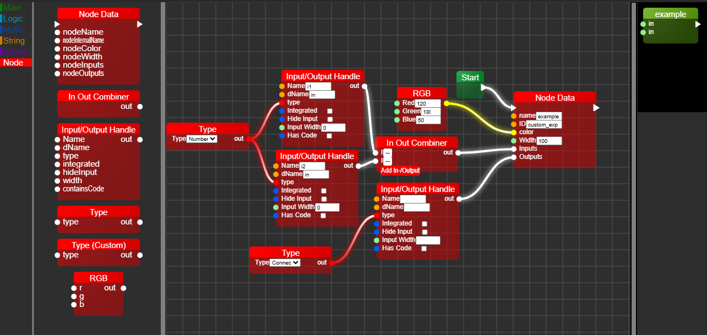

Welcome to the NodeCreator 1.1 Documentation
The Node Creator is a tool to create custom nodes for LineBlox Editor.
This tutorial contains multiple sections:
What is Node Creator?
How to use
Creating Nodes
Node Data
Input & Output
Type Nodes
Example
What is Node Creator?
Node creator is a tool that allows you to create custom nodes for LineBlox Editor.
While you can also do this manually with JS-JSON, you can also use this tool,
which allows you to create your own nodes with nodes.
How to use
To use the Node Creator, open creator.html.
On the right side, you will see the node drawer. This is where you can see the node you are creating.
You can drag and drop nodes from the toolbox on the left side into the node workspace.
Creating Nodes
When you first load into the Node Creator, you will see this node:
This display shows the current node you have already created with the tool.
To edit this node, drag & drop nodes from the toolbox from the toolbox into the workspace.
To start creating nodes, you will have to add a node called "Start" which is under the category "Main".
This node is required so the generator knows from where to generate from.
Node Data
To edit the node in the drawer, you will have to drag a "Node Data" node into the workspace, which looks like this:

This node allows you to set the basic data for the node you are creating, such as the name, color, width and so on.
You can either write your values directly into the white boxes (inputs) or connect other input-nodes to the circles on the left.
Always Generate
AlwaysGenerate is a new property introduced in LineBlox 1.2.2-BETA (creator-1.1).
AlwaysGenerate is great, when you want to have functions for example always generate before the __start__ block.
How To Use
You can use this property, by giving it a value.
The default value for this property is 0.
The numbers decide, when to generate it in the code.
For example, 0 = generate only if connected to another node (default behavior). Any positive number = always generate, with lower numbers generated first
And any other value will be generated afterwards.
For example, 1 will be generated before 2, while the start-node (__start__) will ALWAYS be generated last,
EXCEPT that also has an AlwaysGenerate value not set to 0.
Input & Output
There are In-/Output nodes, that allow you to configure the inputs and outputs of your node:

NODE IO HANDLE
The Handle is used to define the Inputs/Outputs that will be generated.
For Inputs, these will be the handles on the left side of the node in the editor
Everything can be manually changed directly in the node, without needing other kinds of nodes.
The "type" field defines what type of input/output it is, which will determine the what can connect.
Inputs:
- NAME - The name of the field. For internal use, when code needs to access it.
- DNAME - The displayName of the field. This will be displayed to the user.
- TYPE - The type of the field
- Integrated - Whether or not the input-field (toggle, text, number) is integrated in the node.
- Hide Input - This will hide the input (circle) for the connection of other nodes.
- Input Width - The width of the input-field.
- Has Code - Whether or not code will be generated when that input/output will be generated.
> NOTE: SOME values will only be generated, once the toggle is enabled.
This applies to "Integrated" for example.
> NOTE: The "Type" field will be defaulted at "Any" if left empty.
IN OUT COMBINER
This node combines multiple inputs/outputs into one array that can be connected to the Node Data node.
This way, you can create multiple inputs/outputs for your node.
How the In Out Combiner node works:
There's a button "Add In-/Output" which behaves like mutators in blockly.
When it's clicked, a new input field will be created, that you can connect a Node IO Handle node to.
There's no limit as of how many inputs/outputs you can create.
The node with one mutation would look like this:

The node resizes automatically based on how many mutations there are.
> NOTE: You can NOT currently create custom mutators in the Node Creator.
Once you connect the Input/Output Handle to the inputs of the mutations,
it will get combined into a single array for the block to be generated properly.
Finally connect the output of the In Out Combiner node to the respective
input or output value of the Node Data node.
Type Nodes
Type nodes look as following:

Why the type nodes serve great purpose
They serve a great purpose, as they allow you to define the type of certain in-/outputs of your node.
For example, if you want to create an input that only accepts boolean values, you can use the Type: Boolean node.
This ensures that only boolean outputs can be connected to this input in the editor.
Can I use custom type definitions?
You can use custom definitions with the block Type (Custom).
This will allow you to define the type you want via string.
Then only nodes that have the output of that exact type, will be connected to that input.
What does "Any" mean?
Any means that any type can be connected to that input.
This is useful for generic nodes that can work with any type of input.
> NOTE: Currently you can only connect one type to an input, which you can change via code manually,
like this: type: ["Boolean", "String"]. This will only allow "Boolean" and "String" types to be connected.
This might be implemented after 1.0!
> NOTE: An attribute that is not currently given via type nodes, is "display", which will determine the color of
the input/output circle in the workspace. This can also be added manually in the code.
The "display" attribute accepts existing types (e.g. "Boolean", "String", "Number", etc.)
or colors (e.g. "#FF0000", "rgb(255,0,0)", etc.)
This might be implemented after 1.0!
Example
Here's an example for a simple node that has multiple inputs and an output:

This node is just for an example on how to build a simple node.